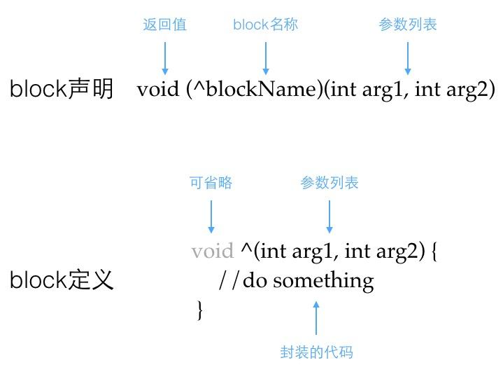
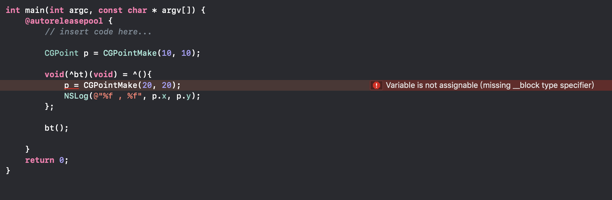
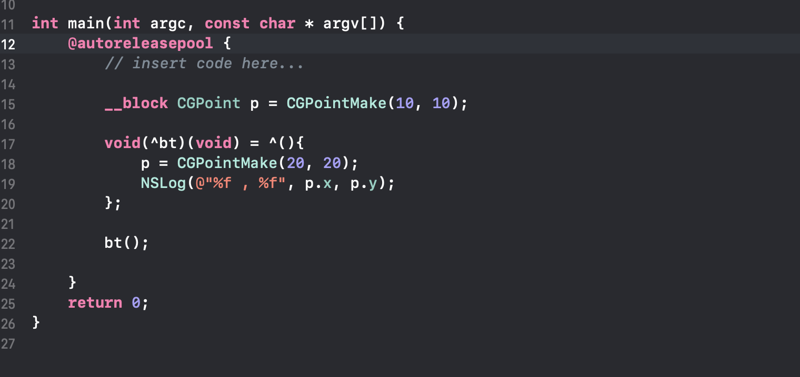

关于Block
在iOS4.0之后，block横空出世，它本身封装了一段代码并将这段代码当做变量，通过block()的方式进行回调。
block的代码是内联的，效率高于函数调用
block对于外部变量默认是只读属性
block被Objective-C看成是对象处理
对于block的底层实现在网上已经有很多资料了，其源码更是可以在opensource.apple.com上下载，因此，本文更着重于对于block的基本应用。
认识Block
Block：带有自动变量的匿名函数，它是C语言的拓展功能，之所以是扩展，是因为C语言不允许存在这样的匿名函数
匿名函数：匿名函数是指不带函数名称的函数
带有自动变量
这是因为Block拥有捕获外部变量的功能，在Block中访问一个外部的局部变量，Block会持有它的临时状态，自动捕获变量值，外部局部变量的变化不会影响它的状态
1
2
3
4
5
6int val = 10;
void (^blk)(void) = ^{
printf("val=%d\n", val);
};
val = 2;
blk(); // 这里输出的值是10，而不是2，因为block在实现时就会对它所在方法中定义的栈变量进行一次只读拷贝为了解决block不能修改自动变量的值，可以使用
__block修饰1
2
3
4
5
6__block int val = 10;
void (^blk)(void) = ^{
printf("val=%d\n", val);
};
val = 2;
blk(); // 这里输出的值是2
一个简单的block，实现两个数之和
1 | int(^sum)(int a, int b) = ^(int a, int b){ |
代码左边是一个block的生命，int为block的返回值类型，^符号后面为block的名称，后面括号里面为参数列表，该block的参数列表有两个，两个都是int类型参数。右边为block的定义。用网上一张图来更好的认识到block。

语法： 由于 Block 的语法是如此的晦涩难记，以至于出现了 fuckingblocksyntax 这样的网站专门用于记录 block 的语法，翻译并摘录如下：
作为变量:
1 | returnType (^blockName)(parameterTypes) = ^returnType(parameters) {...}; |
作为属性:
1 | @property (nonatomic, copy) returnType (^blockName)(parameterTypes); |
作为函数声明中的参数:
1 | - (void)someMethodThatTakesABlock:(returnType (^)(parameterTypes))blockName; |
作为函数调用中的参数:
1 | [someObject someMethodThatTakesABlock:^returnType (parameters) {...}]; |
作为 typedef:
1 | typedef returnType (^TypeName)(parameterTypes); |
Block访问外部基本类型数据
静态变量 和 全局变量在加和不加__block都会直接引用变量地址。也就意味着 可以修改变量的值。在没有加__block参数的情况下。
基本类型常量时，看一段代码
1 | int main(int argc, const char * argv[]) { |
输出1
22019-03-01 11:35:15.244937+0800 BlockDemo[866:40789] 10.000000 , 10.000000
Program ended with exit code: 0
可以看到block可以直接访问到外部的局部变量。但是block内使用外部的变量相当于拷贝了一份外部变量来使用，并不能直接修改外部变量的值，例如

编译器直接进行报错，但是如果想直接修改外部的局部变量的值，那就需要在外部的局部变量前面加上__block的声明。

Block访问外部常量变量
NSString *a = @"hello"; a 为常量变量，@“hello”为常量。）—–不加block类型 block 会引用常量的地址（浅拷贝）。加block类型 block会去引用常量变量（如：a变量，a = @”abc”.可以任意修改a 指向的内容。）的地址。
block 会拷贝变量内容到自己的栈内存上，以便执行时可以调用。 但并不是对str 内容做了深拷贝，重新申请内存。
因为str 是栈内存上的变量，指向 一个常量区的@“hello”. 编译器做的优化是 当block 去拷贝str 指向内容时发现是个常量，
所以会去引用 @“hello” 的指针，没必要再取申请一块内存。
Block访问外部对象变量
如（MyClass class、Block block）。 这里block 也是”类“对象（类似对象，其包含isa指针,clang 反编译可以查看。因为它不像从NSObject 继承下来的对象都支持 retain、copy、release）。*
Block的copy、retain、release操作
不同于NSObjec的copy、retain、release操作：
Block_copy与copy等效，Block_release与release等效；
- Block_copy与copy等效，Block_release与release等效；
- 对Block不管是retain、copy、release都不会改变引用计数retainCount，retainCount始终是1；
- NSGlobalBlock：retain、copy、release操作都无效；
- NSStackBlock：retain、release操作无效，必须注意的是，NSStackBlock在函数返回后，Block内存将被回收。即使retain也没用。容易犯的错误是[[mutableAarry addObject:stackBlock]，在函数出栈后，从mutableAarry中取到的stackBlock已经被回收，变成了野指针。正确的做法是先将stackBlock copy到堆上，然后加入数组：[mutableAarry addObject:[[stackBlock copy] autorelease]]。支持copy，copy之后生成新的NSMallocBlock类型对象
- NSMallocBlock支持retain、release，虽然retainCount始终是1，但内存管理器中仍然会增加、减少计数。copy之后不会生成新的对象，只是增加了一次引用，类似retain；
- 尽量不要对Block使用retain操作
Block的使用场景
声明Block属性 利用Block属性响应事件或传递数据
UIViewController 需要监听TableView中Cell的某个按钮的点击事件，既可以通过Delegate回调，也可以利用Block回调 Block回调的思路： 声明一个Block属性，注意这里要用copy。 利用Block属性进行回调。
方法参数为Block 利用Block实现回调
以
[UIView animateWithDuration:animations:]为例，animations是一个block对象，利用block实现调用者与UIView之间的数据传递链式语法
链式编程思想：将block作为方法的返回值，且返回值的类型为调用者本身，并将该方法以setter的形式返回，从而实现连续调用
1 | // CaculateMaker.h |
为什么Block属性需要用copy修饰？
因为在MRC情况下如果Block属性不使用copy修饰，在使用中会出现崩溃，在ARC情况下，Block属性使用strong修饰会被默认进行copy，所以ARC情况下，Block属性可以使用strong或copy修饰，不然会出现崩溃。
Block在内存中的位置分为三种类型：
NSGlobalBlock 是位于全局区的block，它是设置在程序的数据区中。
NSStackBlock 是位于栈区，当超出变量作用域时，栈上的Block以及__block变量都会被销毁。
NSMallocBlock 是位于堆区，在变量作用域结束时不受影响。
这三种类型对应以下三种情况：
Block中没有截获自动变量时Block类型是
__NSGlobalBlock__Block中截获自动变量时Block类型是
__NSStackBlock__堆中的Block无法直接创建，当对
__NSStackBlock__类型的Block进行copy时，会将Block放到堆中，Block类型变为__NSMallocBlock
当Block类型是__NSStackBlock__时，一旦超出了变量作用域，栈上的Block以及__block变量就会被销毁，从而导致调用Block回调时崩溃。因此，Block属性需要用copy修饰来避免这种情况。
1 | - (void)click:(id)sender { |
Block循环引用
我们先看一段block导致循环引用的代码：
1 | @interface XYZBlockKeeper : NSObject |
1 | @implementation XYZBlockKeeper |
block 在捕获外部变量的时候，会保持一个强引用，当在 block 中捕获 self 时，由于对象会对 block 进行 copy，于是便形成了强引用循环：
为了避免强引用循环，最好捕获一个 self 的弱引用：
1 | - (void)configureBlock { |
使用弱引用会带来另一个问题，weakSelf 有可能会为 nil，如果多次调用 weakSelf 的方法，有可能在 block 执行过程中 weakSelf变为 nil。因此需要在 block 中将 weakSelf “强化“
1 | __weak __typeof__(self) weakSelf = self; |
__strong 这一句在执行的时候，如果 WeakSelf 还没有变成 nil，那么就会 retain self，让 self 在 block 执行期间不会变为 nil。这样上面的 doSomething 和 doMoreThing 要么全执行成功，要么全失败，不会出现一个成功一个失败，即执行到中间 self 变成 nil 的情况。
并非所有的block都存在循环引用，下面列举一些常见的block使用的示例：
1 | // self-->requestModel-->block-->self |
总结
Block的特性也赋予了它许多的灵活性，但是也会出现很多的一些内存泄漏，不易调试的问题，还要多多深入探究。